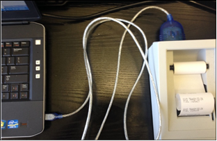
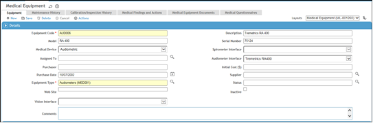
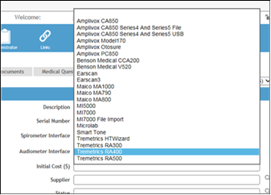
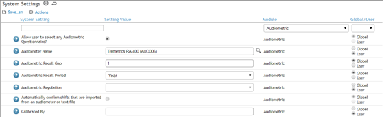
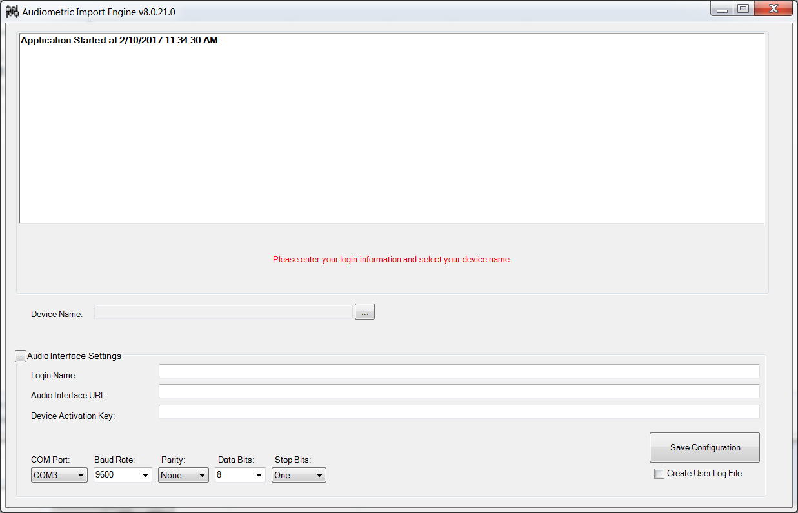
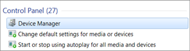
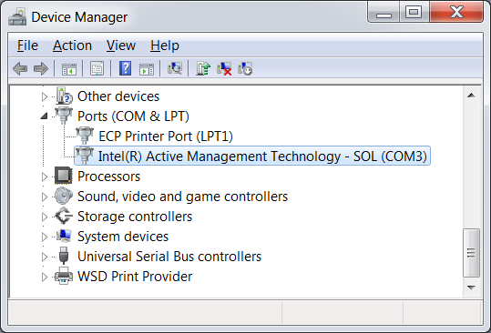
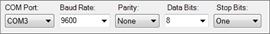
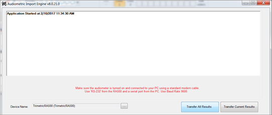

Cority-hosted sites require the use of https (SSL). Firewalls should allow access through port 443.
On self-hosted sites, it is possible to use standard http without SSL, which will require access to port 80 unless configured otherwise by the Web administrator.
A proxy server will interfere with the communication to the Device Import Engine; therefore, the Cority application domain must be bypassed for the proxy server to use a Cority Device Import Engine.
Connecting a Device to Your Computer
This subsection provides instructions for connecting the Spirometer or audiometer to your computer.
To connect a device to your computer:
Ensure that the device is powered on.
Connect the device to a computer using the Serial-to-USB cable or the cable provided by the device.

Important: Microsoft Windows may automatically detect the necessary driver for the device. If so, the driver will be installed when the device is connected to a workstation (PC or laptop) for the first time. If Windows does not detect and install the driver automatically, refer to the device documentation for instructions on how to install the driver manually.
Ensure the device is working correctly and then use it to complete your testing.
Cority Settings
Before transferring the test results, the device must be identified as a type of equipment in Cority. That is, the interface must be selected and defined in the Equipment Module and System Settings.
To add the device to the Equipment module:
Select Occupational Health > Equipment.
Click New.
Enter the ‘Equipment Code’ and ‘Equipment Type’ (Audiometer Interface, Spirometer Interface, or Vision Screener), and then enter a ‘Description’ (recommended).

Select the interface from the appropriate list (Spirometer Interface, Audiometer Interface, or Vision Screener).
Note: Selecting the interface enables the device to interact with the Device Import Engine. See the Cority website for compatible devices.

Review the System Settings that apply to the corresponding module. Use the Module filter to refine the list of settings.

For the Audio Import Engine, all Audiometric module system settings should be reviewed to ensure the settings are configured correctly. The following system settings should be considered carefully:
Match tests to National Security ID for import of Audiometric Tests – determines the unique identifier that will be used to match a test from the audiometer to an employee in Cority
Number of characters to remove from beginning of Employee ID for imports from Audiometric devices – indicates the number of leading characters to be removed in order to create an exact employee number match, if the Patient ID / Employee number in the device contains leading zeroes or other characters that are not in the Cority Employee Number
Number of characters to remove from end of Employee ID for imports from Audiometric devices – indicates the number of end characters to be removed in order to create an exact employee number match, if the Patient ID / Employee number in the device contains zeroes or other characters at the end of the Employee Number that are not in the Cority Employee Number
Classify Audiometric Test Records that have the same date and different times as the same record – treats test records that have the same date but different times as the same record
Save OSHA recordable shifts to the 300 log? – controls if the system will create an incident record and store the incident in the OSHA 300 log when an OSHA Recordable audiometric record is created
Use Age Corrections – controls if the system will use age corrections when calculating shifts from original or previous baselines
For the Spirometric Import Engine, all PFT module System Settings should be reviewed to ensure the settings are configured correctly. The following system settings should be considered carefully:
Match tests to National Security ID for import of Pulmonary Tests – determines the unique identifier that will be used to match a test from the Spirometer to an employee in Cority
Number of characters to remove from beginning of Employee ID for imports from Spirometry devices – indicates the number of leading characters to be removed in order to create an exact employee number match, if the Patient ID/Employee number in the device contains leading zeroes or other characters that are not in the Cority Employee Number
Number of characters to remove from end of Employee ID for imports from Spirometry devices – indicates the number of end characters to be removed in order to create an exact employee number match, if the Patient ID/Employee number in the device contains zeroes or other characters at the end of the Employee Number that are not in the Cority Employee Number
PFT Units of Measure – specifies the units of measure to be used in the PFT module
Pulmonary Calculation Standard – specifies the Pulmonary Function standard to be used for analysing results in the PFT module
For the Vision Import Engine, all Vision module system settings should be reviewed to ensure the settings are configured correctly. The following system settings should be considered carefully:
Layout: Keystone A (UK) Vision Testing Form – specifies the layout for when you are viewing Keystone A (UK) vision device records
Layout: Keystone B2 (US) Vision Testing Form – specifies the layout for when you are viewing Keystone B2 (US) vision device records
Layout: Titmus Vision Testing Form – specifies the layout for when you are viewing Titmus i500 or Titmus v4 vision device records
Configuring the Device Import Engine
This subsection provides instructions for configuring the Cority Device Import Engine.
To configure the Device Import Engine:
From the Start menu, launch the Device Import Engine. The Device Import Engine will open.

Enter the appropriate Device Import Engine settings.
Cority Login Name – the Cority login name
Cority Audio/Spirometric/Vision Interface URL – the URL for the Cority application
Device Activation Key – to obtain the activation key, log in to Cority and then append the Cority URL with /security/retrieveapikey.rails For example, if your Cority URL is https://<your domain>, change the URL to https://<your domain>/security/retrieveapikey.rails.
This URL will provide you with the activation key. Enter the activation key into appropriate field in the Audio Import Engine. Note: Each user will get a unique activation key; therefore, each user is required to determine their own key in this way.
Click Save Configuration. Note: When you save a configuration, the configuration is saved and can be used for subsequent transfers until you make changes to it.
Provide the Device Name by selecting it from the list provided.
This list is generated from the Cority Equipment table and only displays devices that are compatible with the Device Import Engine.
Set the COM Port (Communication Port) as follows:
Open Device Manager. In the search bar of the Start menu, type “Device”. Select Device Manager from the Control Panel.

Open the ‘Ports’ node to determine the port your device is connected to.

Select the corresponding COM port in the Device Import Engine settings.

Enter the followingBaud Rate, Parity, Data Bits, and Stop Bits values:
Baud Rate – this is dependent on the device. The Baud Rate will be provided in a tooltip that appears once the device is selected.
Parity – None (the default value is dependent on the device)
Data Bits – 8 (the default value is dependent on the device)
Stop Bits – One (the default value is dependent on the device)
Use the Create User Log File checkbox to troubleshoot issues. It is not required for typical transfer sessions.
When a device is selected, red notification text appears to provide additional information specific to that device. For example, if the RA500 is selected, you will see the following red text:

Review the text and configure the settings accordingly.
The text for each audiometer will instruct you to ensure that the device is connected to your PC using a standard modem cable. Use the RS-232 (from an RA500, for example) and a serial port from the PC. In the settings, select 9600 as the Baud Rate.
The text for each Spirometer will instruct you to ensure that the Spirometer is turned on and the base station is connected to your PC using a USB cable. It will also instruct you to use the Transfer Last Best, Transfer All Best,or Transfer All button for data transfer, and recommend that you do not perform tests while the form is open.
The required settings for compatible audiometers are:
(Note: An asterisk indicates that the device is no longer supported. We have retained its instructions in case you need to reference them.)
Device
Baud Rate
Parity
Data Bits
Stop Bits
Additional Instructions
1
Amplivox Model 170
N/A
N/A
N/A
N/A
Enter the correct Amplivox file path for the Model 170 software in the settings (the Loadit.exe file should be present in the path).
Connect the device to the PC.
Run a test on the Amplivox Model 170 device using your PC.
Click Transfer Current Result to transfer the result into Cority.
2 *
Amplivox CA850 Series 4 and Series 5
9600
None
8
One
Connect the device to a PC using a USB cable.
Use the Data Export option on the device to transfer a completed test result.
3
Amplivox Otosure
N/A
N/A
N/A
N/A
Enter the correct Amplivox file path for the Otosure software in the settings (the Loadit.exe file should be present in the path).
Connect the device to the PC.
Click Launch Otosure on the Cority Audio Import Engine to launch the Otosure software.
Run a test and then close the Otosure software.
Click Transfer Current Result to transfer the result into Cority.
4
Amplivox PC850
N/A
N/A
N/A
N/A
Enter the correct Amplivox file path for the PC850 software in the settings (the Loadit.exe file should be present in the path).
Connect the device to the PC.
Click Launch PC850 on the Cority Audio Import Engine to launch the PC850 software.
Run a test and then close the PC850 software.
Click Transfer Current Result to transfer the result into Cority.
5 *
Earscan 3
115200
None
8
One
Click Send to transfer the result into Cority.
6
MI5000
9600
None
8
One
Connect the device using a custom MI-5000 cable.
7 *
MI7000
9600
None
8
One
Connect the device using a custom MI-7000 cable.
Select the correct Communication Code as per the MI-7000 device settings.
For a single test transfer: after the test is completed, click Transfer Current Result.
For a multiple test transfer: select the Batch Transfer checkbox, refer to the device manual to select stored records, and click the XFER/TALK key on the device.
8
Smart Tone
9600
None
8
One
N/A
9 *
Tremetrics HT Wizard
19200
None
8
One
Make sure the Audiometer is turned on and connected to the PC.
Select the correct COM port in the port section of the form.
Uncheck Use External Printer for the Amplivox device.
10 *
Tremetrics RA300
9600
None
8
The Tremetrics RA300 device only sends data that has not been previously transferred to the PC when you select Transfer All Results.
11 *
Tremetrics RA500
9600
None
8
One
Make sure the audiometer is turned on and connected to the PC.
Use the RS-232 from the RA500 and a serial port from the PC.
12
Tremetrics RA660
N/A
None
N/A
N/A
Ensure that the To and From folder location has been set in the Hearcon software before performing any tests.
Set the Hearcon software location. Click the Begin Tests button to start your testing. This will launch the Hearcon software.
When you have completed your testing, click Import Tests to import all recently completed Tests.
13 *
Tremetrics RA800
9600
None
8
One
Make sure the audiometer is turned on and connected to the PC using a USB cable.
Open the Tremetrics USB Com Adapter program and connect the device.
The required settings for compatible Spirometers are:
(Note: An asterisk indicates that the device is no longer supported. We have retained its instructions in case you need to reference them.)
Device
Baud Rate
Parity
Data Bits
Stop Bits
Additional Instructions
Amplivox Spirodoc *
N/A
N/A
N/A
N/A
Enter the correct file path for the Spiroconnect software in the settings.
Connect the Spirodoc device to the PC.
Click Launch on the Cority Spirometric Import Engine to open the Spirodoc Employee Data form.
Fill in the form and click Next to open the Spiroconnect software.
Run an FVC test and click Export Results to close the software.
Click Transfer Best Test to transfer the result into Cority.
EasyOne
9600
None
8
One
Make sure the Spirometer is turned on and the USB cradle is connected to your PC using a USB cable. Important: The EasyOne USB cradle hardware device is required.
Use Transfer Last Best, Transfer All Best or Transfer All for the data transfer.
It is recommended that you do not perform tests while the form is open.
Depisteo Q13
N/A
N/A
N/A
N/A
Click ‘Select File’ to open File Import window.
Click ‘Browse’ to select the data file (io_data.txt) to import. Default Folder: C:\ProgramData\Depisteo\ Database.
Click ‘Import’ to transfer file data into Cority.
Note: The Q13 Graph PDF must reside in C:\ProgramData\Depisteo\Database to be imported into the Documents tab of the PFT record.
Note: Some Spirometers require an employee number. When that is the case, an employee number field is provided. For Spirometers that send the employee number in the data transfer, the field is not available.
The required settings for compatible vision screeners are:
Device
Baud Rate
Parity
Data Bits
Stop Bits
Additional Instructions
Depisteo VT1
N/A
N/A
N/A
N/A
Set the Depisteo VT1 Software Folder.
Set the folder where the Depisteo VT1 data file (io_data.txt) is stored. Default folder: C:\ProgramData\Depisteo\Database.
Click the Begin Test button to start your testing. This will launch the Depisteo VT1 software.
When you have completed your testing, click End Test to import recently completed test.
Titmus v4
N/A
N/A
N/A
N/A
Export the Data file from your Titmus Vision Software.
Click Select File in the Vision Import Engine and browse for the file to import.